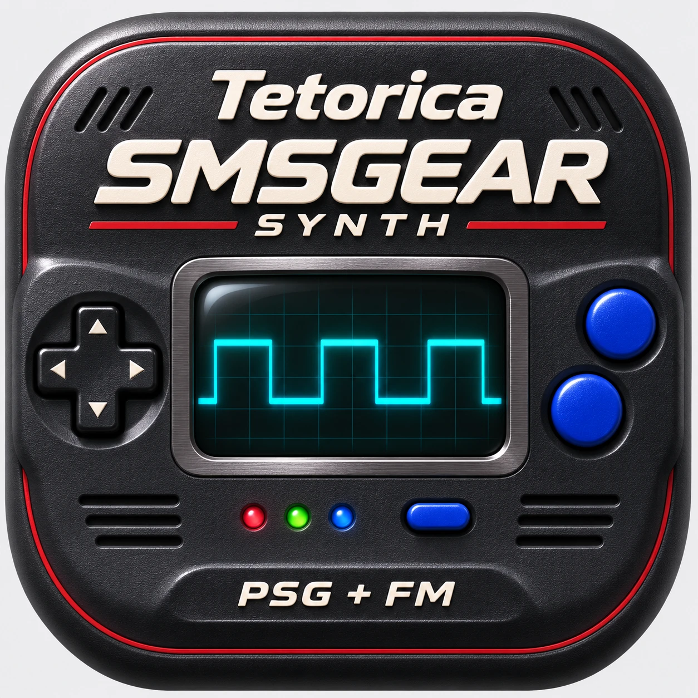

THREE TONES · NOISE · OPTIONAL FM
Tetorica SMSGEAR Synth
Master System / Game Gear · Sega PSG + YM2413 FM
Enable audio, then play the keyboard. Editing does not start audio.
Auto · three tone voices.
Sega PSG
?
Three fixed-duty square-wave tones and one Noise channel. Attenuation 0 is loudest; 15 is silent. Noise rate is shared with Tone 3 when selected. Game Gear routes each voice left/right with an 8-bit mask. Auto allocation and musical tuning are software controls.
Game Gear stereo · shared routing mask
Tone periods and output levels follow the selected physical channel. Use Auto for three-voice keyboard allocation.
YM2413 · OPLL
?
Nine two-operator FM voices, or six melody voices plus five percussion instruments. Built-in sounds are fixed. Every channel using instrument 0 shares the one User patch below. OPLL output is mono. Rhythm occupies physical CH7–CH9.
Output Mixer
Measured source gains, shared by keyboard, Code and reference playback. These are software output controls, independent of hardware attenuation.
Software performance · same PSG / YM2413 as the controls above. Run Ctrl/Cmd+Enter · Apply Ctrl/Cmd+Shift+Enter.
Code saves in Files.
Console
?
Use
const psg = await
useSoundChip("segapsg")
or
const fm = await
useSoundChip("ym2413"). Code addresses physical zero-based
CHs and shares the keyboard chips. Apply
retains context and named loops.
Keyboard input stays available in Code
view; click outside the editor to play.
liveFx, musical timing, Auto allocation
and Pitch are software controls.